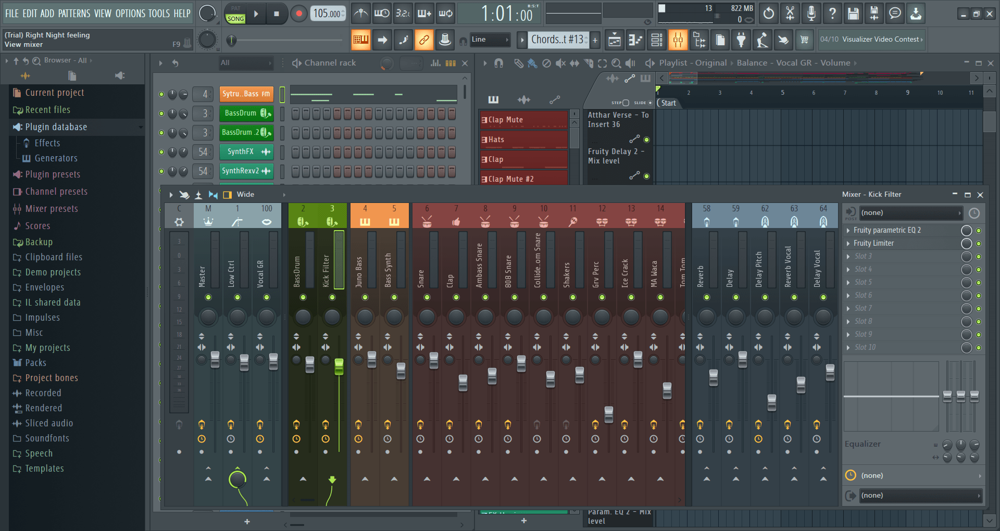

Hello, I am Akshat B. Wadhwa, but people call me Akki. I am an international student from India.
I am also an audio enthusiast and an avid gamer. My usual gamer tag is Reaper like the Overwatch agent Reaper or the Grim Reaper.
Frag Punk is a new 5v5 tactical shooting game set to be released in March this year.
It is a fusion of two of my favorite games: Valorant and Call of Duty.
Instead of having an ultimate ability, the team votes on perks like "no spray" or "enemy crouches when hit," but the game follows the basic spike detonation concept.
Watch the trailer here
Music is a huge part of my life—I have been playing musical instruments since first grade.
I use software like FL Studio and Logic Pro X to remake well-known EDMs or compose my own music.

This remake took me about a week to complete.